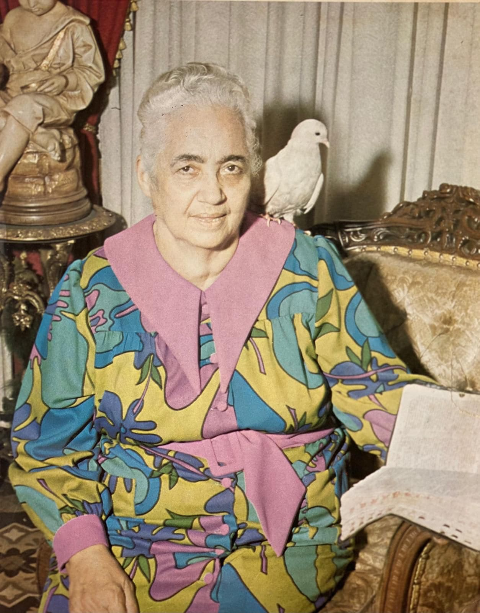
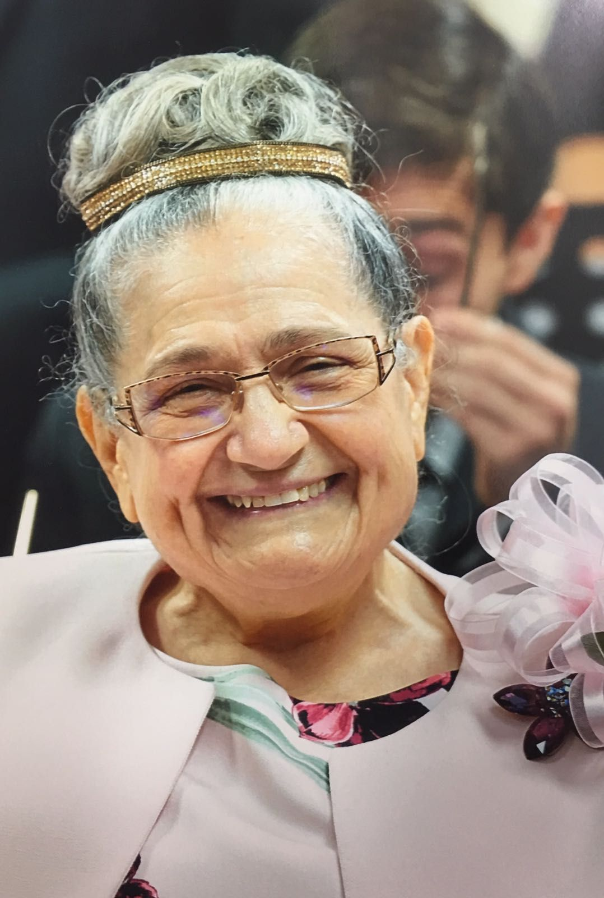

Negli anni '20, Juanita soffrì di una grave malattia gastrica che la tenne sotto cure mediche per 12 anni. La condizione peggiorò così tanto che non riuscì nemmeno a mangiare cibo. I medici la abbandonarono e fu allora che, sul suo letto, Juanita gridò a Dio e promise che se l'avesse guarita, l'avrebbe servito e avrebbe attraversato campi e città annunciando il vangelo della salute e della salvezza. Dio ascoltò il suo grido; Un'anziana signora che visitava i malati venne a casa sua e la pregò, lasciando Juanita completamente sana all'istante. Da quel momento mantenne la sua promessa e si consegnò a Dio, unendosi alla Chiesa Pentecostale.


Juanita García Peraza
Juanita García Peraza nacque il 24 giugno 1897 a Hatillo, Porto Rico. Veniva da una famiglia di alto ceto sociale. Sin da bambina dimostrò grandi valori morali e spirituali, amore per i poveri, grande sensibilità al dolore degli altri, coraggio, integrità e carità.

Cominciò a distinguersi nella Chiesa per il suo amore, umiltà, consacrazione e santità. Era presidente del gruppo delle donne e Dio l'ha usata nella profezia, rimproverò il peccato e chiamò all'unità del popolo di Dio. I dirigenti della Chiesa non riuscivano a capire che lo Spirito di Dio si manifestava in essa; non accettarono il grande disegno del Signore di unificare la sua Chiesa. Per questo Juanita affrontò situazioni di immenso dolore: la umiliarono, perché era una donna le hanno detto di stare zitta; ma è stata sempre così umile da fidarsi di chi l'ha scelta. Un giorno lo Spirito Santo di Dio le disse: «Mia serva, prestami il tuo corpo; Ho bisogno di te per un grande lavoro. Chi ascolta te ascolta me e chi si unisce a te si unirà a me». Addolorata per tutte le persecuzioni sorte contro di lei, invocò Dio e, mentre pregava nella sua stanza, vide per rivelazione una stella scendere dal cielo con un movimento circolare. Nella sua mente si chiedeva dove sarebbe caduta, ma si scontrò con la sua fronte: era la luce dello Spirito Santo di Dio che confermava il suo ministero.
Nell'anno 1940, insieme ad 11 fratelli, lasciò la Chiesa Pentecostale ed iniziò a predicare un triplice messaggio di amore, libertà e unità. Questi erano i seguenti: Teófilo Vargas Seín (Aarón), Pedro Vargas, Encarnación Seín (Concepción), Luis Barrios, Octavio Velázquez, Blasina Barreto, Juan Catalán, Tomasa Catalán, Justa Corchado, Juana Allende e José "Pepe" Pastoriza. Si forma la Chiesa Libera e cominciano ad incontrarsi ad Arecibo, sia nelle case dei fratelli da poco convertiti che nei templi in affitto. Juanita García decise di lasciare tutti i suoi beni materiali per servire Dio in umiltà.

Nel 1947 la Congregazione si trasferì nella capitale, San Juan; da lì inizia a sviluppare e diffondere il suo messaggio. Oltre al grande lavoro spirituale, ha svolto uno straordinario lavoro socio-comunitario. Ha predicato nel modo migliore: con l'esempio. È riuscita a trasformare la sua comunità in una comunità completamente organizzata. Ha sviluppato cooperative e corporazioni che hanno offerto opportunità di lavoro e grandi benefici e miglioramenti economici ai membri della comunità. Ha fondato una scuola biblica, nota come il Catechismo (El consejero), per istruire, guidare i bambini nel loro sviluppo integrale. Ha creato accademie musicali, bande e cori. Tra le sue molteplici composizioni spiccano i seguenti inni: Marcia trionfale, Benvenuto, Il candelabro, La visione, I giusti, Il cuore puro, La pietra bianca, Se hai agito da credente, Le mura della città tra gli altri.

Istituì un Corpo di Guardia con lo scopo di dare sorveglianza gratuita a tutti le proprietà che la Congregazione andava acquistando e la comunità in genere. stabilito un corpo di predicatori, predicatori, diaconi e diaconesse che fanno il bene, predicano, pregano per i malati e fanno un lavoro straordinario ovunque vada la Congregazione Mita.
Istituì un Corpo di Guardie con lo scopo di vigilare gratuitamente su tutti i beni che la Congregazione andava acquisendo e sulla comunità in genere. Ha istituito un corpo di predicatori e predicatrice, diaconi e diaconesse che fanno il bene, predicano, pregano per i malati e svolgono un'opera straordinaria ovunque vada la Congregazione Mita. Come visionaria, ha desiderato e profetizzato la creazione di un'egida per la cura degli anziani e di una scuola per i bambini e gli adolescenti della comunità, che dopo la sua morte si è avverata. Svolse una grande opera missionaria visitando i malati nelle loro case e negli ospedali, pregando per loro, offrendo aiuto a chi è nel bisogno e fare del bene a piene mani. Ha visitato le carceri con parole di incoraggiamento, consolazione e amore. La sua opera evangelista è stata sorprendente. C'erano sempre sulle sue labbra esortazioni e consigli attraverso la parola saggia, l'ammonimento tempestivo, ma allo stesso tempo la pazienza e la temperanza che sempre la caratterizzavano. In questo modo, c'era da aspettarsi che il suo lavoro ministeriale avrebbe influenzato notevolmente il campo sociale e il miglioramento personale di molti esseri umani e di intere famiglie in tutto Porto Rico. Molti alcolisti, tossicodipendenti e depressi sono stati salvati ed ora sono uomini e donne utili, cittadini responsabili e onesti. La sua predicazione profonda e di grande contenuto spirituale ha raggiunto lo scopo divino di trasformare tutti coloro che hanno ascoltato e accolto il messaggio. La sua influenza fu tale che attraversò i confini di Porto Rico verso terre straniere, stabilendo la Congregazione negli Stati Uniti (Washington DC, Chicago e New York) e nella Repubblica Dominicana (Santo Domingo e Santiago de los Caballeros). Sottolineiamo che Juanita García Peraza ha dato alla donna l'opportunità di esprimersi totalmente, permettendo loro un'ampia partecipazione nella Chiesa.  Ha segnato l'inizio di una nuova era per le donne a Porto Rico e nel mondo. In un momento in cui non era permesso di officiare nella Chiesa, Juanita abbatte le barriere e aprì la strada alla diffusione del pastorato femminile, confermando le parole del profeta Isaia 27,11: "Quando i loro rami si seccheranno e si spezzeranno le donne verranno ad accenderli". Proprio come Debora è sorta come madre spirituale in Israele, Juanita García Peraza è risorta come madre per radunare un popolo per la salvezza. Dopo aver svolto un lavoro straordinario per 30 anni, il 21 febbraio 1970, fu chiamata da Dio al riposo eterno. L'opera delle sue mani prevale nel cuore del suo popolo, come testimonianza fedele della sua lotta instancabile e del suo amore incondizionato. Prima della fine del suo ministero, davanti a un gruppo di testimoni, chiamò Aaròn e gli disse: "Abbi cura dei miei figli e ti pagherò", affidandogli il suo lavoro per continuare la sua eredità. Per l'anno 1978 è stato insignito del titolo di Dottore in Filosofia in Amministrazione honoris causae.
Tocca le immagini principali per vedere le altre biografie.
Teófilo Vargas Seín
Teófilo Vargas Seín (conosciuto con il suo nome spirituale Aarón) è nato la mattina presto
del 23 ottobre 1921, in un'umile casetta nel quartiere Aibonito di Hatillo, Porto Rico.
I suoi genitori erano Pedro Vargas ed Encarnación "Concepción" Seín. Di fronte ad una
gravidanza difficile, Concepción ha chiesto a Dio di permetterle di avere un buon parto
e ha promesso che se suo figlio fosse nato sano, l'avrebbe donato interamente al
servizio di Dio.
 La sua richiesta fu accolta e il bambino fu chiamato Teofilo, che
significa "amato da Dio".
Teofilo è cresciuto sotto la grazia divina con la giusta direzione di genitori gelosi per
il bene, in una casa umile, piena di onore, cristianesimo e grandi valori spirituali.
Era un figlio disciplinato, laborioso e disponibile dei suoi genitori. Frequentava con
loro una chiesa pentecostale e partecipava con entusiasmo agli studi biblici e
interpretava i testi con virtù spirituale. Poiché desiderava instancabilmente
imparare, cercò ulteriore saggezza tra gli anziani della Chiesa. Quando aveva
10 anni, la famiglia si trasferì ad Arecibo, dove desiderava ulteriori doni
spirituali e studiava la Bibbia.
Un giorno, mentre passeggiava per la città di Arecibo, vide Juanita García Peraza.
Riconobbe che era una donna speciale e piena di Dio, anche senza conoscerla personalmente.
Lo stupore fu tale che non dimenticò mai il suo volto. Dio dispose che i suoi genitori
venissero nella stessa chiesa pentecostale che lei frequentava. Quando la vide, la
riconobbe, ma quale fu il suo stupore che quella notte la misero a predicare.
L'anima di quel bambino vibrò, e in quei momenti poté capire che Dio parlava
attraverso la sua bocca. Sentiva un'alleanza inspiegabile con lei e la
seguiva ovunque.
La sua richiesta fu accolta e il bambino fu chiamato Teofilo, che
significa "amato da Dio".
Teofilo è cresciuto sotto la grazia divina con la giusta direzione di genitori gelosi per
il bene, in una casa umile, piena di onore, cristianesimo e grandi valori spirituali.
Era un figlio disciplinato, laborioso e disponibile dei suoi genitori. Frequentava con
loro una chiesa pentecostale e partecipava con entusiasmo agli studi biblici e
interpretava i testi con virtù spirituale. Poiché desiderava instancabilmente
imparare, cercò ulteriore saggezza tra gli anziani della Chiesa. Quando aveva
10 anni, la famiglia si trasferì ad Arecibo, dove desiderava ulteriori doni
spirituali e studiava la Bibbia.
Un giorno, mentre passeggiava per la città di Arecibo, vide Juanita García Peraza.
Riconobbe che era una donna speciale e piena di Dio, anche senza conoscerla personalmente.
Lo stupore fu tale che non dimenticò mai il suo volto. Dio dispose che i suoi genitori
venissero nella stessa chiesa pentecostale che lei frequentava. Quando la vide, la
riconobbe, ma quale fu il suo stupore che quella notte la misero a predicare.
L'anima di quel bambino vibrò, e in quei momenti poté capire che Dio parlava
attraverso la sua bocca. Sentiva un'alleanza inspiegabile con lei e la
seguiva ovunque.
Nel 1936, quando Teofilo aveva 15 anni, arrivò a casa della sorella Juanita e la trovò inginocchiata in preghiera. Vedendo ciò, si inginocchiò nell'altro angolo della stanza per non interromperla, finché all'improvviso lo Spirito Santo la afferrò, prese l'olio d'oliva (liquido che lo Spirito Santo ha sempre usato per l'unzione dei suoi strumenti scelti) e lo versò sulla sua testa, dicendo: "Io ti ungo per essere un ministro del Regno". Da quel momento fu consacrato alla predicazione della parola di Dio.

Teofilo faceva parte del gruppo di 11 fratelli che nel 1940 lasciarono la Chiesa Pentecostale
insieme a Juanita García Peraza. Da quel momento in poi, ha cominciato a predicare
attraverso i campi e le città di Porto Rico annunciando che lo Spirito Santo stava
radunando un popolo per la salvezza e parlava attraverso le labbra di una signora
in Arecibo. Oltre ad essere il primo predicatore, fu anche la prima guardia, il primo
amministratore, il primo costruttore, contadino e musicista di percussioni della Banda.
Si è distinto nella Congregazione per la sua santità, abnegazione e impegno per
l'Opera di Mita.
Nel 1957 gestisce e guida tutte le procedure per l'incorporazione della Congregazione davanti
al Commonwealth di Porto Rico. È stato nominato vicepresidente del consiglio di amministrazione.
Dio stava seminando in lui tutte quelle qualità che un profeta dovrebbe possedere:
santità, integrità, fermezza di carattere,
 disponibilità al sacrificio, coraggio nell’affrontare i problemi, saggezza, benignità, bontà,
carità, e soprattutto un immenso amore per le anime,
Per essere stato scelto da prima della nascita e unto per essere un ministro del Regno, quando
il Signore ha considerato di far riposare il corpo di Juanita García Peraza, ha affidato
il suo popolo ad Aaròn dicendo: "Abbi cura dei miei figli e ti pagherò".
È così che nel 1970 Aarón assume con coraggio la guida della Congregazione di Mita.
Sotto la sua guida iniziò la crescita travolgente dell'Opera di Mita, espandendosi molto
di più nella Repubblica Dominicana e negli Stati Uniti, e affermandosi in Colombia, Messico,
Venezuela, Costa Rica, Panama, El Salvador, Canada, Ecuador, Spagna, Italia e Svizzera.
Ha dedicato tutta la sua vita alla predicazione evangelista, aiutando i bisognosi e visitando
gli ospedali, pregando gratuitamente per i malati, indipendentemente dal fatto che fossero
o meno membri della Congregazione. In tutti i paesi dove è arrivata l'Opera di Mita,
stabilì bande musicali, un corpo di guardie e costruì templi. Si è sempre recato in
questi Paesi per portare la parola di incoraggiamento e il triplice messaggio di amore,
libertà e unità.
disponibilità al sacrificio, coraggio nell’affrontare i problemi, saggezza, benignità, bontà,
carità, e soprattutto un immenso amore per le anime,
Per essere stato scelto da prima della nascita e unto per essere un ministro del Regno, quando
il Signore ha considerato di far riposare il corpo di Juanita García Peraza, ha affidato
il suo popolo ad Aaròn dicendo: "Abbi cura dei miei figli e ti pagherò".
È così che nel 1970 Aarón assume con coraggio la guida della Congregazione di Mita.
Sotto la sua guida iniziò la crescita travolgente dell'Opera di Mita, espandendosi molto
di più nella Repubblica Dominicana e negli Stati Uniti, e affermandosi in Colombia, Messico,
Venezuela, Costa Rica, Panama, El Salvador, Canada, Ecuador, Spagna, Italia e Svizzera.
Ha dedicato tutta la sua vita alla predicazione evangelista, aiutando i bisognosi e visitando
gli ospedali, pregando gratuitamente per i malati, indipendentemente dal fatto che fossero
o meno membri della Congregazione. In tutti i paesi dove è arrivata l'Opera di Mita,
stabilì bande musicali, un corpo di guardie e costruì templi. Si è sempre recato in
questi Paesi per portare la parola di incoraggiamento e il triplice messaggio di amore,
libertà e unità.
Ha fondato la Scuola Congregazione Mita, l'Aegis (La Egida) e L’istituzione Il Paradiso (Paraíso), l'Ufficio di orientamento e lavoro sociale, il Los Hermanos Memorial Park. Ha ispirato tutta la Congregazione con il suo esempio e la sua opera. Nel 2003, in occasione dell'inaugurazione della nuova chiesa della congregazione di Santo Domingo, l'ex Governatore di Porto Rico, Onorevole. Rafael Hernández Colón si è espresso così su Aarón: "Quest'uomo dirige e va, e ciò che predica lo pratica".

Ha promosso lo sviluppo delle Belle Arti con la costituzione di accademie musicali e gruppi musicali in tutto il mondo. Sotto la sua guida furono fondati il gruppo di arpa e l'orchestra di violini. Tra le sue numerose composizioni spiccano le seguenti: Il mio incontro con Mita, Mita è la vera alba, Quanto amo la tua legge! Ti ringraziamo, Chiamando con amore, I cieli contano la tua gloria, tra gli altri . Dopo quasi 85 anni di ministero e 51 anni alla guida dell'Opera di Mita, il 18 gennaio 2021 è stato chiamato da Dio al riposo eterno. Dal 2012 aveva nominato Rosinín madre spirituale e guida della Congregazione.
Tocca le immagini principali per vedere le altre biografie.
Rosinín Rodríguez Pérez
Rosinín Rodríguez Pérez è nata a Guayama, Porto Rico, il 18 ottobre 1937. Sua madre era Isabel (Elisabetta) Pérez Vázquez e suo padre era Heriberto Rodríguez Fonseca. All'età di quattro anni andò a vivere a San Sebastián. È cresciuta in una casa piena di grandi valori spirituali e morali. Fin da piccola si distinse per il suo amore, intelligenza, gentilezza, dolcezza e per la sua grande sensibilità verso le cose spirituali.  Alzò gli occhi al cielo e chiese a Gesù che voleva camminare con lui, che voleva vedere il suo volto e stare con lui come facevano in passato. Quando era molto giovane, si ammalò gravemente e sua madre implorò Dio di mandare un angelo per guarirla. All'improvviso, Isabel (Elisabetta) ebbe una visione di un angelo bambino, che camminava a piedi nudi, atterrò sul letto di Rosinin e lo pregò. Immediatamente la bambina fu completamente guarita. Isabel (Elisabetta) diceva sempre che il volto santo di quell'angelo era scolpito nella sua mente e se l'avesse rivisto lo avrebbe riconosciuto. Nel 1955, è entrata all'Università di Porto Rico, Mayagüez Campus, nel programma di pre-ingegneria, dove ha studiato per un anno. Nel 1956 si trasferì al Río Piedras Campus dell'Università di Puerto Rico, Facoltà di Scienze Sociali. Nel 1959 ha finito il suo diploma di maturità in Scienze Sociali con una specializzazione in Psicologia e Sociologia. Ha poi completato 18 crediti a livello di master in Counseling e 20 crediti in Educazione presso l'Università di Puerto Rico.
La sua prima esperienza lavorativa è stata presso la Biblioteca José M. Lázaro dell'Università di Porto Rico, Río Piedras Campus, come assistente bibliotecaria. La sua seconda esperienza lavorativa è stata presso la Scuola Media J.R. Dávila di Bayamón, dove ha lavorato come insegnante di spagnolo e studi sociali. Nel 1960 è stata insegnante ospite presso i campi del Dipartimento dell'Educazione. Nel 1961 ha lavorato nella Riabilitazione Vocazionale come consulente, dove ha avuto l'opportunità di aiutare diversi fratelli della Congregazione a finire la loro carriera professionale. Ha poi continuato a lavorare nella sezione Determinazione dell'invalidità della previdenza sociale come consulente.
Nel 1962 ha lavorato presso il Centro di opportunità per i giovani
(Youth Opportunity Center) del Dipartimento dell'Istruzione. Da
giugno 1965 a marzo 1971 ha lavorato come consulente del lavoro presso
il Dipartimento del Lavoro.
L'anno 1962 fu trascendentale nella sua vita, quando conobbe Mita e si unì alla Congregazione.
La sua anima fu abbagliata dalla bellezza spirituale di quest'Opera; Era ciò che desideravo
da bambina, camminare con Gesù come facevano gli antichi. Ogni domenica visitava la casa
pastorale della Congregazione, per condividere con la persona di Mita ei fratelli. Stava
imparando le leggi spirituali e come dovrebbe essere un cristiano. Tutti quegli insegnamenti
divini risuonavano dentro di lei e la stavano trasformando. Nel 1966 fu chiamata da Dio a
vivere nella casa pastorale della Congregazione di Mita. Da quel momento sentì che Dio la
stava preparando per il futuro, poiché vide che Mita le insegnava con insistenza la legge
e come trattare Aaròn con amore e considerazione.
In un'occasione, la persona di Juanita Garcia Peraza (Mita) visitò la mamma di Rosinín.
Quando Isabel vide Aaron —che li accompagnava— rimase sbalordita ed esclamò:
"Rosinín, è l'angelo che ti ha guarito quando eri una bambina. Lui è l'angelo! Sapevo che l'avrei
riconosciuto"..
Nel 1970, dopo la morte di Juanita García Peraza, continuò fedelmente al fianco di Aarón,
collaborando a tutti i progetti della Congregazione.
 Ha accompagnato Aarón in tutti i suoi viaggi ministeriali in vista dell'espansione e
dell'internazionalizzazione dell'Opera. Ovunque andasse, riceveva l'amore di tante
migliaia di fratelli che vedevano in lei un essere pieno di bontà e di tenerezza.
È sempre stata a braccetto con Aarón nei molteplici progetti architettonici e di sviluppo
dell'Opera di Mita, rimanendo sempre la sua persona più fidata. Era a conoscenza di tutte
le costruzioni, rimodellamenti ed estensioni dei templi in tutti i paesi. Ha assicurato
la corretta pianificazione e organizzazione di tutti gli aspetti della Congregazione Mita.
Più e più volte, Aarón ha espresso il suo apprezzamento per il suo impegno, cura e
dedizione per il bene di questa Opera di Mita.
Si è distinta per i suoi grandi valori morali e spirituali, per la sua consacrazione, cura,
dedizione e impegno verso la Congregazione e verso tutti i parrocchiani.
Ha sido:
Ha accompagnato Aarón in tutti i suoi viaggi ministeriali in vista dell'espansione e
dell'internazionalizzazione dell'Opera. Ovunque andasse, riceveva l'amore di tante
migliaia di fratelli che vedevano in lei un essere pieno di bontà e di tenerezza.
È sempre stata a braccetto con Aarón nei molteplici progetti architettonici e di sviluppo
dell'Opera di Mita, rimanendo sempre la sua persona più fidata. Era a conoscenza di tutte
le costruzioni, rimodellamenti ed estensioni dei templi in tutti i paesi. Ha assicurato
la corretta pianificazione e organizzazione di tutti gli aspetti della Congregazione Mita.
Più e più volte, Aarón ha espresso il suo apprezzamento per il suo impegno, cura e
dedizione per il bene di questa Opera di Mita.
Si è distinta per i suoi grandi valori morali e spirituali, per la sua consacrazione, cura,
dedizione e impegno verso la Congregazione e verso tutti i parrocchiani.
Ha sido:
- Membro della Casa Pastorale della Congregazione Mita.
- Membro fondatore e prima amministratrice della Scuola Congregazione Mita.
- Membro fondatore dell'Aegis (Egida) e l’istituzioni El Paraíso (Il Paradiso).
- Socio fondatore dell'Ufficio di Assistenza e Orientamento Sociale e prima amministratrice.
- Madrina della Banda di Mita.
- Membro fondatore di Los Hermanos Memorial Park.
- Membro fondatore del Centro Sanitario Medico Dr. Luis Daniel Silva.
- Presidente del consiglio di amministrazione di Los Hermanos Corporation.

Dal 2012 è stata designata dallo Spirito Santo attraverso Aarón come la madre spirituale del popolo di Mita e la succeditrice nella direzione della Congregazione. Sotto il suo ministero e la sua direzione, l'Opera di Mita si è diffusa nei paesi del Cile, del Nicaragua e dell'Italia, continuando l'eredità di espansione lasciata da Aarón. La sua composizione artistica è fruttuosa. I suoi inni spiccano: Amore santo, Amore ardente, La Vita, Tu sei la mia ragione, Fede, amore e pace, Non dimenticarmi, Sogno, tra gli altri. Dall'anno 2021, quando Aarón è chiamato da Dio al riposo eterno, Rosinín ha assunto la guida della Congregazione Mita ed è lo strumento attraverso il quale ascoltiamo la voce di Dio.
Tocca le immagini principali per vedere le altre biografie.